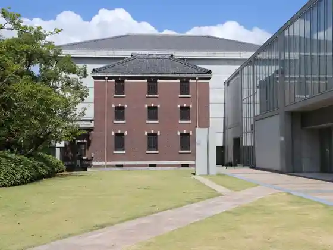
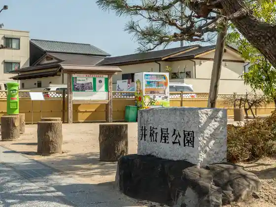
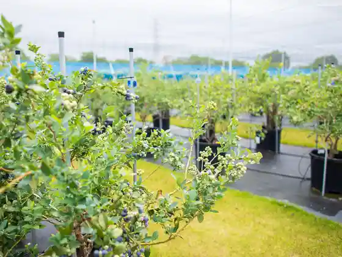
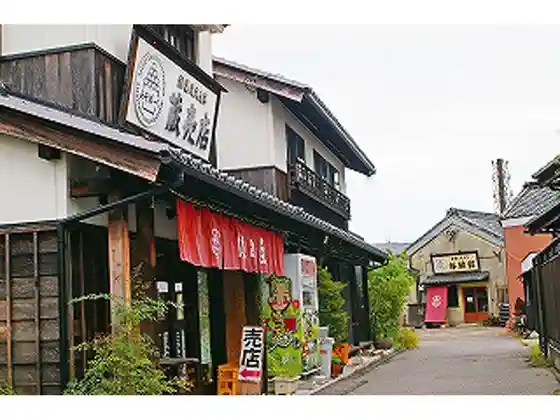

Sangane Yama Sukai Line Mikawawan Sukai Line
Nishio, Aichi · 0563-62-3001 · Official / source link
Nishio Iwase Bunko
Nishio, Aichi · 0563-56-2459 · Official / source link

Iketa Ya Park
Nishio, Aichi · 0563-65-2149 · Official / source link

Nishio Gorufu Buruberii Farm
Nishio, Aichi · 0563-72-3338 · Official / source link

Misopaku Hato Ya
Nishio, Aichi · 0120-18-1084 · Official / source link

Aoi Seicha
Nishio, Aichi · 0563-57-2570 · Official / source link
Maejima Higashi Hazu no Tomboro Higata (Higashi Hazu Coast)
Nishio, Aichi · 0563-62-2068 · Official / source link
Sonno Kuramoto
Nishio, Aichi · 0563-62-2005 · Official / source link
Isshoku San Unagi
Nishio, Aichi · 0563-72-8847 · Official / source link
Saku Shima Nabisuteshon
Nishio, Aichi · 0563-72-9607 · Official / source link
Limit Hazu Mise (Hazu Marin Mise)
Nishio, Aichi · 0563-62-3937 · Official / source link
Goofy
Nishio, Aichi · 080-5161-0007 · Official / source link
Matcha Museum (Saijo Sono Wa Ku Wa Ku)
Nishio, Aichi · 0563-77-6572 · Official / source link
Nishio Shioda Taiken Kan Kira Aeba Shio Village
Nishio, Aichi · 0563-32-3373 · Official / source link
I Bun Shrine
Nishio, Aichi · 0563-57-2838 · Official / source link
Mikawa Kogei Garasu Art Museum
Nishio, Aichi · 0563-59-3334 · Official / source link
Howaitoeibu 21
Nishio, Aichi · 0563-34-8222 · Official / source link
Aichi Kodomo no Kuni
Nishio, Aichi · 0563-62-4151 · Official / source link
Roadside Station (Nishio Oka no Yama)
Nishio, Aichi · 0563-55-5821 · Official / source link
Saku Shima Ora Coast
Nishio, Aichi · 0563-72-9607 · Official / source link
Terabe Beach
Nishio, Aichi · 0563-57-7882 · Official / source link
Ebisu Beach
Nishio, Aichi · 0563-57-7882 · Official / source link
Miyazaki Beach
Nishio, Aichi · 0563-57-7882 · Official / source link
Heigen Falls
Nishio, Aichi · 0563-57-7882 · Official / source link
Isshoku Sakana Plaza
Nishio, Aichi · 0563-72-3700 · Official / source link
Nishio Great Buddha / Jofuku Tera
Nishio, Aichi · 0563-57-7840 · Official / source link
Netsu Ike Hachiman Sha
Nishio, Aichi · 0563-57-7840 · Official / source link
Nishio Shiro to Kyu Konoe Tei (Nishio Rekishi Park)
Nishio, Aichi · 0563-54-6758 · Official / source link
Kira Onsen
Nishio, Aichi · 0563-32-0525 · Official / source link
Saku Shima
Nishio, Aichi · 0563-72-9607 · Official / source link